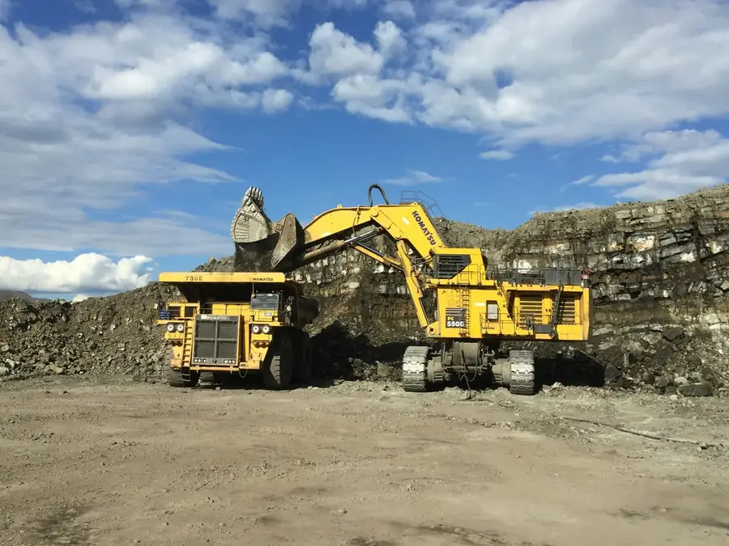

The Komatsu SAA6D107 is the six cylinder engine behind the PC200 and PC210, two of the most common 20 tonne excavators on Australian civil and quarry sites. It is used in other mid-size Komatsu machines too. This guide covers the versions, the issues we see and what a remap does.
SAA6D107 at a Glance
| Layout | Inline six cylinder, turbocharged and aftercooled, direct injection |
|---|---|
| Displacement | 6.69 litres (bore 107 mm, stroke 124 mm) |
| Fuel system | High-pressure common rail |
| Example ratings | PC200-8: about 110 kW. PC210-10: about 123 kW (165 hp) at 2,000 rpm |
| Versions | SAA6D107E-1 (Tier 3 era), -2 (with Komatsu's KDPF) and -3 (adds SCR with AdBlue) |
Figures are general and vary by machine, market and year. Check your engine plate for the exact version.
Which Machines Use It?
You will find the SAA6D107 in Komatsu PC200 and PC210 excavators across several generations, and in other mid-size Komatsu machines. With so many 20 tonne excavators working in Queensland, it is one of the engines we see most often on Komatsu remaps.
Common Issues We See
These are the problems we most often see on working machines with this engine. None of them are unique to it, but knowing them helps you plan maintenance and spot trouble early.
- KDPF loading. Long idle time and light work stop the filter from burning clean, leading to frequent regenerations and derates.
- AdBlue faults on -3 engines. NOx sensors, dosing pumps and crystallised injectors cause most warnings.
- EGR soot. Carbon build up in the EGR valve and cooler costs power and raises fuel use.
- Fuel quality. Water and dirt are hard on common rail injectors, especially on dusty sites.
What a Remap Does on the SAA6D107
A tailored remap adds torque where the hydraulics need it, so the machine holds engine speed in hard digging and cycles faster with less fuel per hour. On a larger Komatsu, our WA600-8 wheel loader went from 538 to 619 HP (indicative) with a 10% fuel saving.
We offer three packages on this engine. Fuel Saver is tuned for torque low in the rev range and the lowest litres per hour, Power adds up to 30% more power for machines that work at their limit, and Combo adds our Reliability Solution for DPF, EGR and AdBlue faults on off-road machines only. See the Komatsu tuning packages.
What Could You Save?
As an estimate: a 20 tonne excavator using 18 L/hr over 2,000 hours burns 36,000 litres a year. An 8% saving is 2,880 litres, which at $2.80/L is about $8,064 a year. That is an estimate, not a promise, and results vary by make, model and condition.
Get a Free Quote for Your Machine
Send us the model, year and engine plate photo. We will confirm what is realistic for your machine before you commit to anything.
Request a Free QuoteCommon Questions
What engine is in a Komatsu PC200 or PC210?
Most PC200 and PC210 excavators use the Komatsu SAA6D107 six cylinder engine, a 6.69 litre common rail diesel.
What is the difference between SAA6D107E-1, -2 and -3?
The -1 is the earlier Tier 3 era version. The -2 adds Komatsu's diesel particulate filter (KDPF), and the -3 adds SCR with AdBlue as well.
Can the SAA6D107 be remapped?
Yes. A tailored remap adds torque where the hydraulics need it, helping the machine hold speed in hard digging.
Why does my PC210 keep regenerating?
Light work and long idling keep exhaust temperatures low, so the KDPF loads up and needs frequent regenerations.
How much fuel can a remap save on a Komatsu excavator?
On our own jobs we have measured 6% to 11%, with the best machines reaching up to 18%. Results vary by make, model and condition.
Can you fix KDPF or AdBlue faults on Komatsu machines?
For off-road machines, yes. Our Combo package adds the Reliability Solution for KDPF, EGR and AdBlue faults to a remap, in one visit.
Do you tune on site?
Yes. We tune at your yard or on site and work around your schedule. Most machines take 2 to 4 hours.